Impressões da Temporalidade
O artístico, o simbólico e o imaginário nos sambaquis
Os zoólitos são esculturas polidas em rochas, construídas pelos sambaquieiros e que apresentam formas de animais, especialmente de peixes, mamíferos marinhos e aves, bem como de animais terrestres. Embora seja menos frequente, também é possível encontrar esculturas polidas em ossos, as quais são chamadas de zoósteos. Alguns zoólitos eram utilizados em contextos funerários, outros como bastões e até mesmo como adornos. Os arqueólogos defendem que os zoólitos eram artefatos raros, cuja a posse evidenciaria divisões sociais hierarquizadas.
A exposição é resultado de um projeto interdisciplinar de ensino e aprendizagem que mobiliza conhecimentos nas áreas de História, Tecnologia, Arte e Arqueologia. Neste projeto, os(as) estudantes criaram modelos 3D de zoólitos utilizando o Blender, um software livre de modelagem digital. As peças foram impressas em 3D e, a partir delas, foram confeccionados moldes de silicone para criação de réplicas em cimento e gesso para que ficassem mais semelhantes às originais em termos de textura e peso. Além desta exposição virtual, os(as) visitantes podem ter acesso à exposição física (no Sesc Caiobá) e ao documentário sobre o projeto.
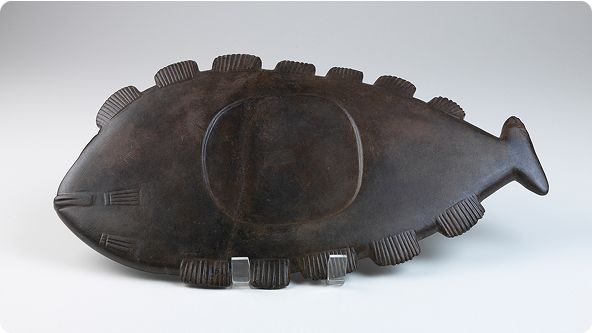 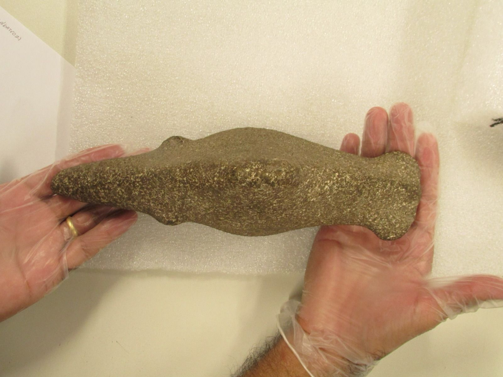
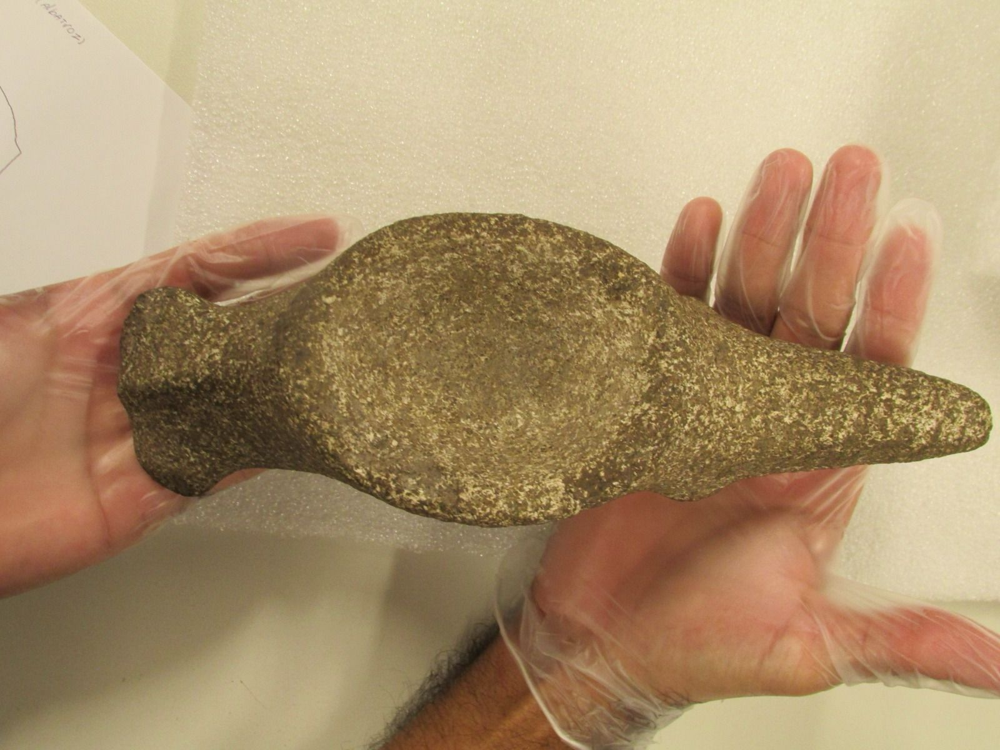
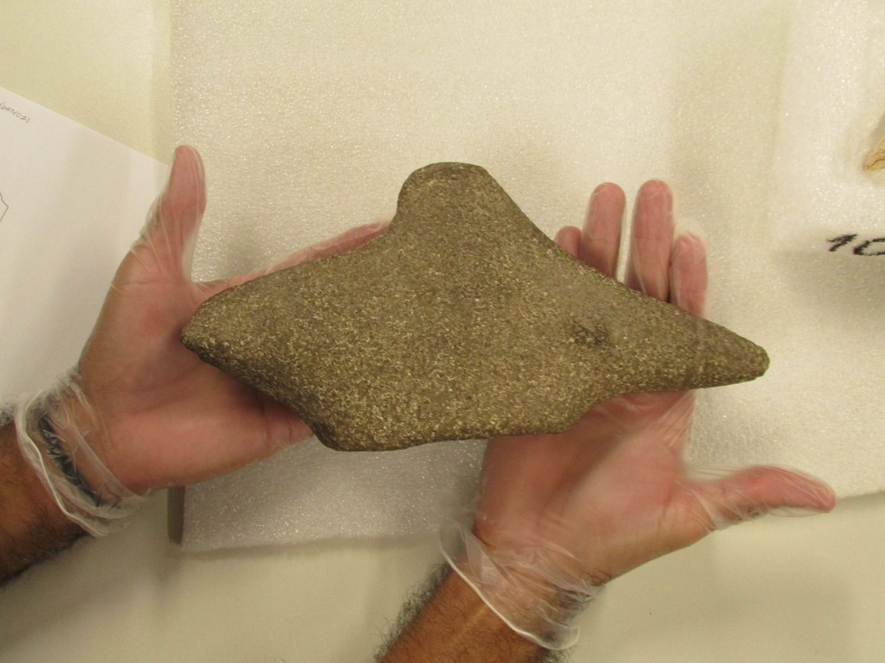
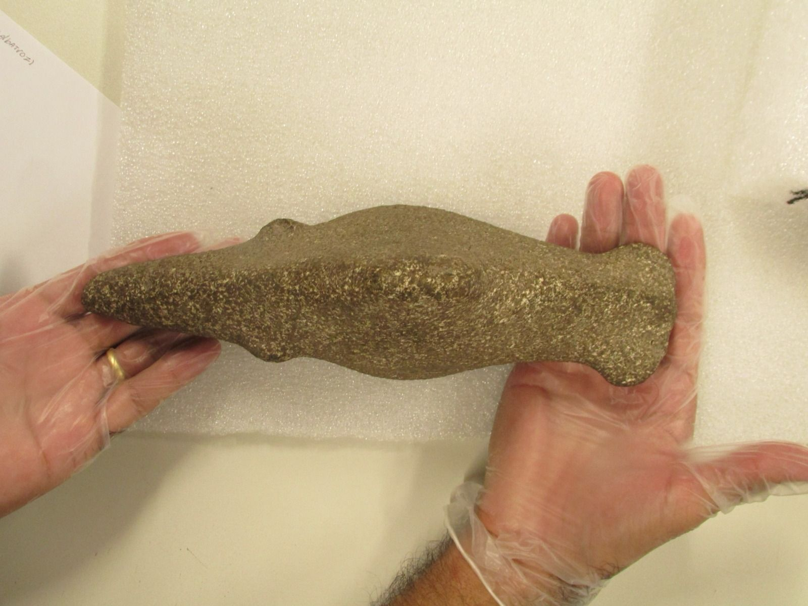
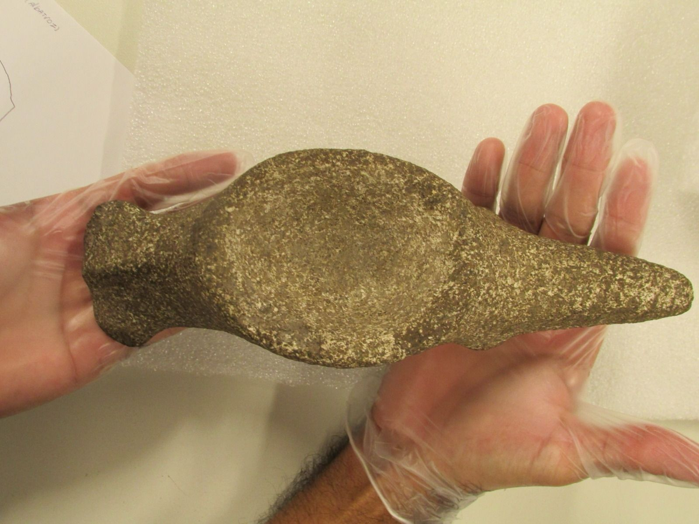
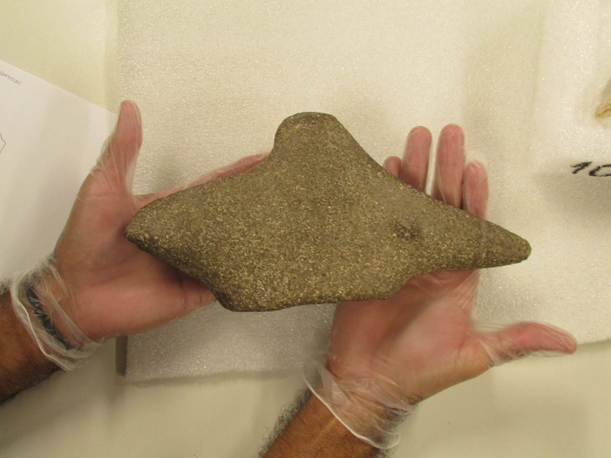
 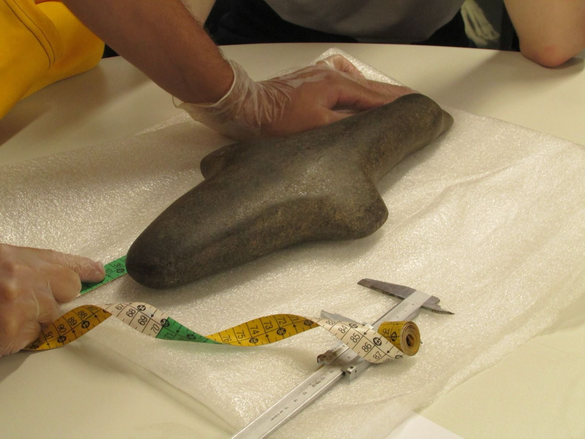
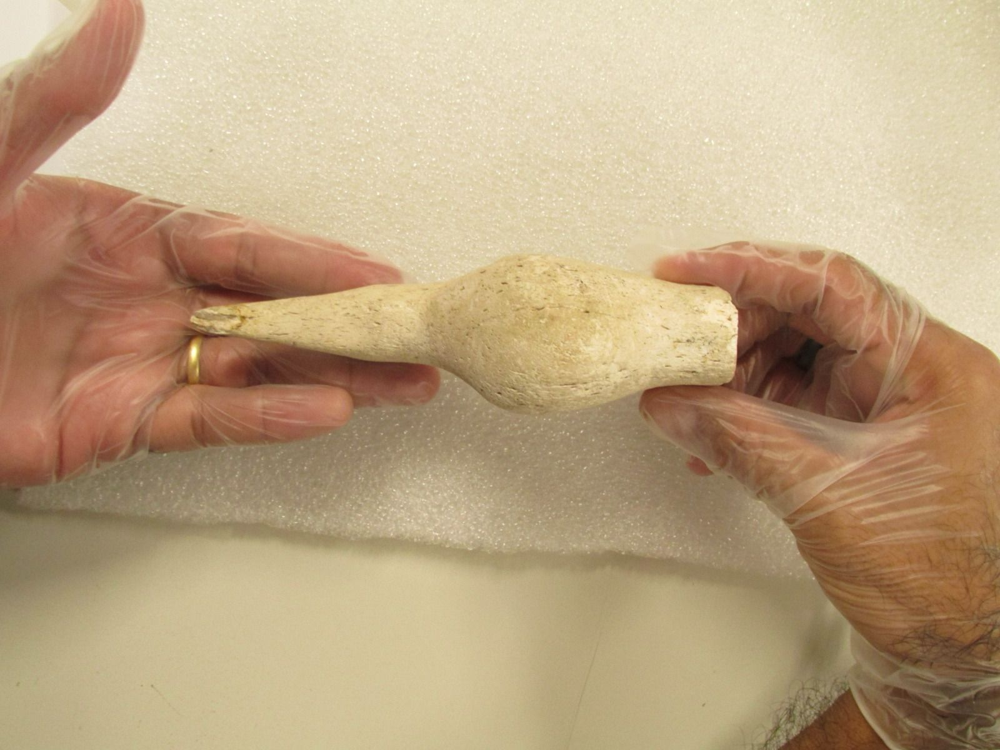
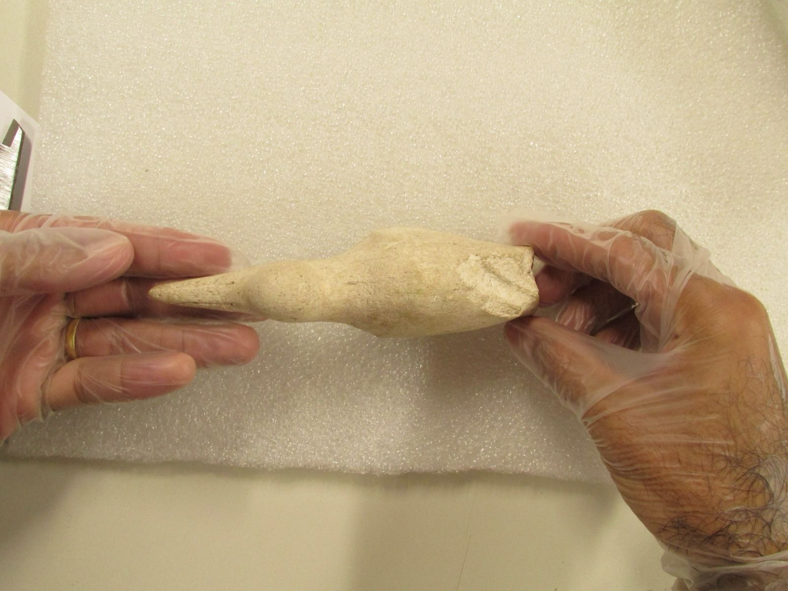
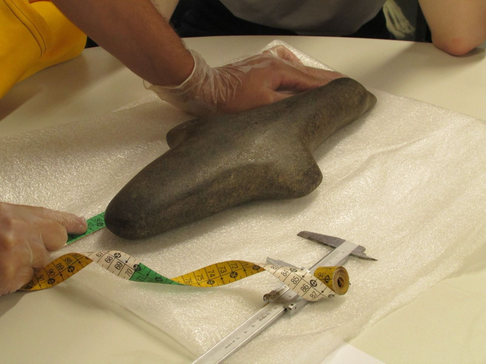
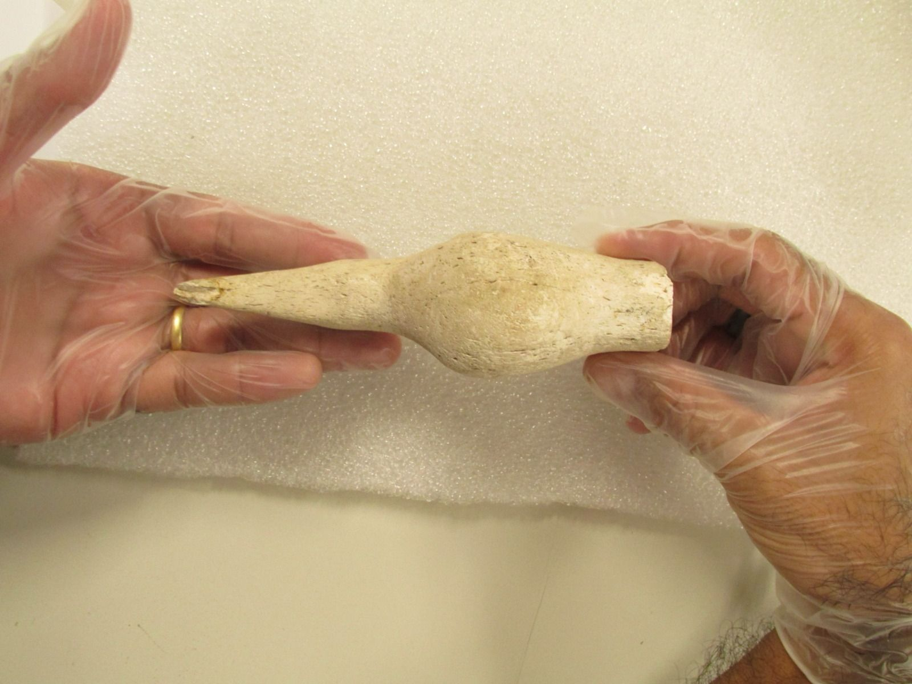
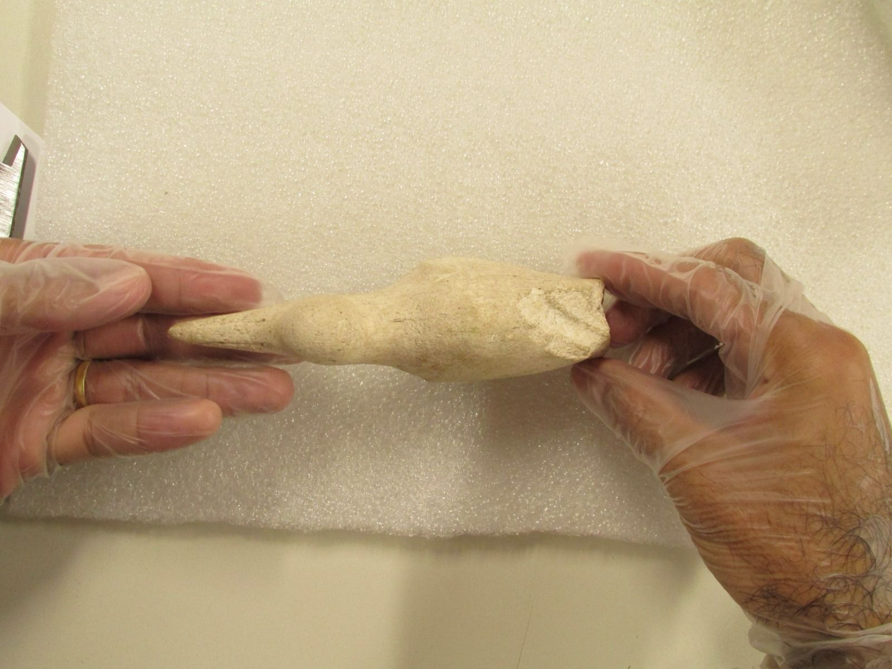